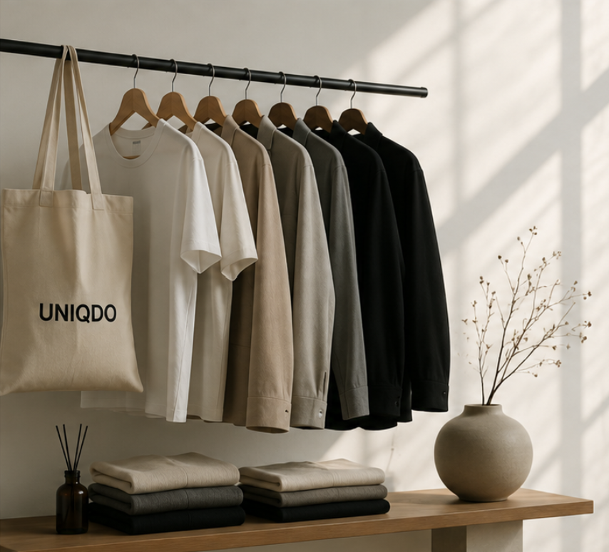

Less is more. Always.

UNIQDO was founded on a simple belief: that the clothes we wear every day should be quiet, considered, and built to last. We started with a single tee and a question — what would fashion look like if nothing was wasted?
Every garment we make begins with restraint. We strip away the logos, the seasonal noise, and the excess, leaving only what serves the person wearing it. The result is a wardrobe of essentials designed to work together, season after season, year after year.
Our pieces are cut from carefully chosen fabrics and finished by hands that care about the details you cannot see. We would rather make fewer things well than many things quickly.
This is fashion without the noise — timeless, honest, and made for the long run. Welcome to UNIQDO.
Every piece is made to outlast the trend.
We remove everything that doesn't need to be there.
Responsible sourcing from fabric to finish.